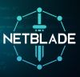

David Rivera-Chino - Computer Science Student
I am a fourth year Computer Science student at Illinois Institute of Technology. I like writing clean, efficient code to solve any kinds of problems.
If you want to learn more my experience, make sure to check my resume page.
About Me
I was born in Berwyn, IL, a town near Chicago. Growing up, I was always fascinated by technology. My passion began with playing video games and browsing the internet.
I started my undergraduate degree in fall of 2022 and plan on graduating with a bachelor's in spring of 2026. I am still deciding whether or not I want to continue and pursue a master degree. I'm interested in just about anything in CS. Web development, systems programming, cybersecurity, software engineering, game dev, and much more.
Being able to learn new things and see my progress over time gives me motivation to keep going. Whether it is solving a difficult problem, finishing a project, or simply understanding a new feature of a language, I feel a strong sense of accomplishment. I also like helping others. Whether that be sharing knowledge, collaborating on group projects, or supporting friends and family. To me, success is not only about reaching big goals, but also about continuing to grow, stying motivated, and making a positive impact on the people around me.
During my free time, I enjoy all kinds of activites. I play video games, listen to music, watch tv shows, and much more.
Featured Project
NetBlade
Desktop application for Windows that looks at a public database of malicious websites and add them to the computer's firewall to block them.
Make sure to check my resume page to learn more.
Skills and Tools
My favorite programming language is C++. Check out page3 to learn more about this language.
Operating Systems:
- Windows 10
- Windows 11
- Linux
Languages:
- C++
- C#
- C
- Python
Frameworks/Libraries:
- SDL3
- Godot
- Qt
- PyQt
- Tkinter
- Numpy
- Pandas
Tools:
- Git
- GitHub
- CMake
- VS Code
- Visual Studio 2022
- Bash
- Powershell